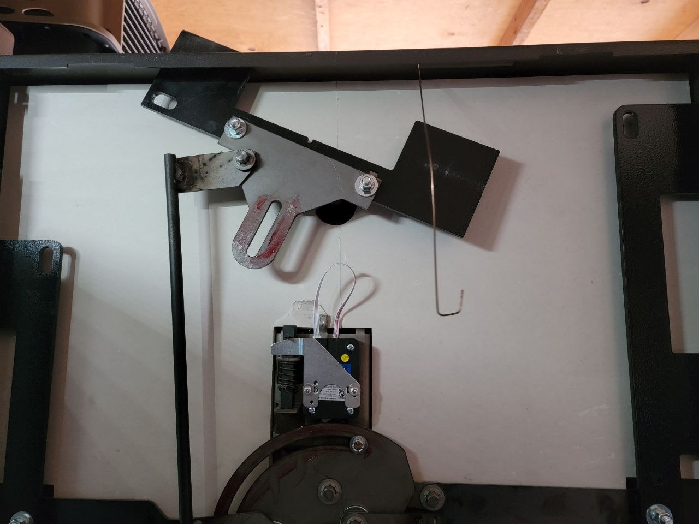
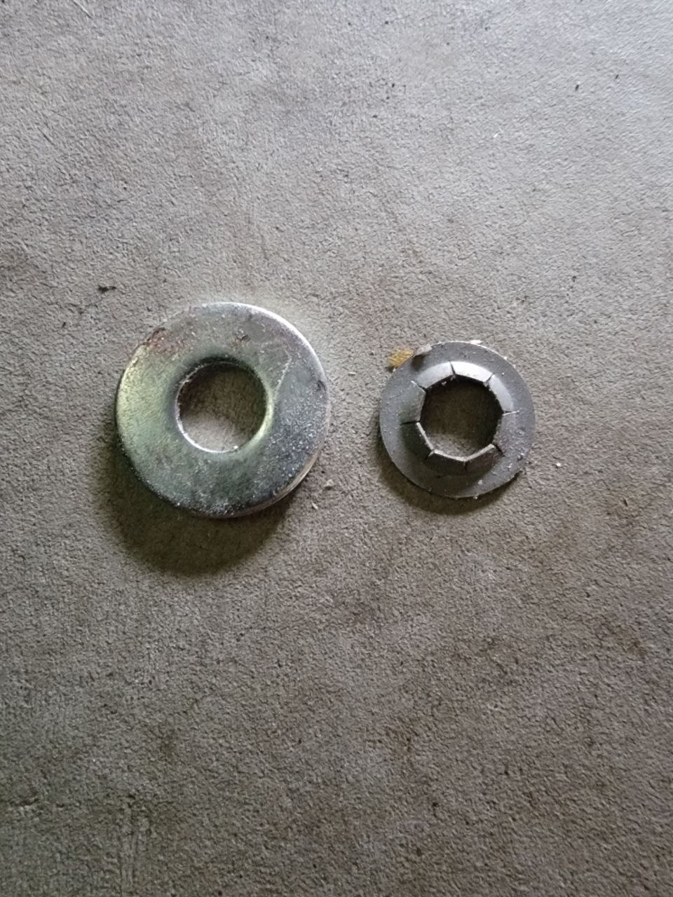

A Bent Wire and a $0.20 Part — How This Liberty Safe Opened Without a Scratch
This Liberty Safe came to me in rough shape. The left locking tab wouldn't release. The owner had already called around — a few "locksmiths" suggested cutting it open with a saw. The safe was an hour from being destroyed.
I took one look at it and knew exactly what was going on inside.


Left: The wire you see fished through the guide slot for the locking tab. Right: The faulty crush washer that caused the whole problem.
If you look close at the first photo, you'll see a stout wire I fashioned and fished through the crack of the door, through the guide for the locking tab. I used it to lift the fallen side of the locking mechanism so the left side could pivot and clear the frame. The safe opened smoothly. No damage. Not a single scratch.
The Culprit? A Crush Washer
A $0.20 crush washer had failed. The locking tab dropped just enough to catch on the frame and wouldn't release. The whole safe — thousands of dollars worth of steel, fireproofing, and engineering — locked up because of a washer the size of a dime.
This is why you don't call a guy with a sawzall. He sees "safe won't open" and reaches for the blade. I see "safe won't open" and ask why.
I Know What's Inside. I Know How It Works.
I'm a preferred technician for Liberty Safe. I know their locking geometry, their guide channels, their failure points. When the left tab wasn't releasing, I didn't guess — I knew the mechanism underneath, visualized where the fallen part was, and reached it with a wire through a gap most people wouldn't even notice.
That's 40 years of experience. That's understanding a safe from the inside out.
New crush washer installed. Locking tab operating smoothly. Safe functions like new. And not a single tool mark anywhere.
Got a safe that's stuck? Call me before the saw comes out.
GSA Certified • Preferred Technician for Liberty, Fort Knox, Stealth, Superior & National • CA LCO 4160
Pricing at frantzlocksmithservice.com/pricing